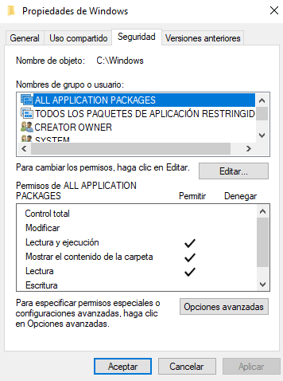
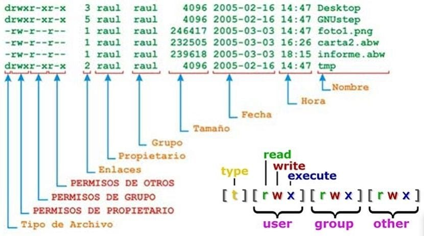

Mòdul Professional 6 - UF1: Gestió de permisos
#SMXMP06UF1
Raul Gimenez Herrada
2023-02-10 dv. 00:00
Created: 2023-10-03 dt. 12:24
1. Llicència d'ús

2. Permisos a sistemes de fitxers
Permisos típics de lectura, escriptura i execució.
RECORDAR: Sempre MÍNIMS permisos.
2.1. Com gestionar-los
- Mínims permisos possibles.
- Agrupacions d'usuaris per grups.
- Particularitats del sistema de fitxers.
3. Gestió de permisos a Windows

3.1. Pestanya Seguretat
- Gestiona els permisos del sistema de fitxers local.
- Tot usuari que hi accedeixi quedarà filtrat (tant si accedeix localment com remot).
- Cal ser el més restrictiu possible.
- Denegar preval sobre Permetre.
- Herència a opcions avançades.
3.2. Pestanya Compartir
- Gestiona els permisos de les carpetes compartides (accedides remotament).
- Han de ser més restrictius que la pestanya Seguretat, sinó no té sentit.
- Denegar preval sobre Permetre.
- Herència a opcions avançades.
3.3. ALERTA!
Coses a recordar:
- Seguretat preval per sobre Compartir.
- Denegar preval sobre Permetre.
- Propietats heretades.
4. Gestió de permisos a Linux

4.1. Comandes per gestionar Grups
Amb les comandes:
grupadd- Crear un grup nou.
grupdel- Eliminar grup.
grupmod- Modificar grup.
cat /etc/group- LListar grups existents.
getent- Saber els membres (usuaris) d'un grup.
4.2. Comandes per gestionar Usuaris
Amb les comandes:
adduser- Crear usuaris.
usermod- Modificar un usuari (afegir-lo a un grup per exemple).
userdel- Eliminar usuari.
groups- Veure grups de l'usuari.
4.3. Comandes per gestionar Permisos
Amb les comandes:
ls -l- Llistar el directori i mostrant permisos.
chmod- Canvi de permisos.
chown- Canvi propietari.
chgrp- Canvi grup.